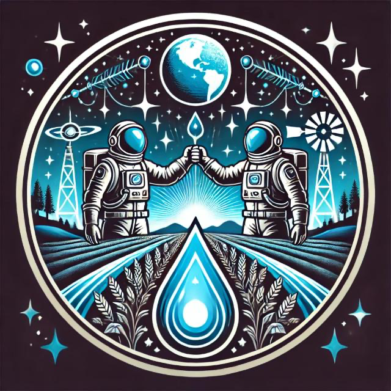

DroughtManager will help you, as a farmer, better understand the conditions of your crops and the surrounding areas by analyzing important factors like climate, soil moisture (using satellite data), and drought risk. With this information, the app can predict if your harvest might be affected by drought, and most importantly, offer practical suggestions to help you prepare and reduce the impact, such as when to irrigate or alternative ways to protect your crops.

This will assist you in making more informed and safer decisions, ensuring your production is less affected by unexpected climate changes. The app will simplify the data, showing you in an easy-to-understand way what might happen and what actions you can take to minimize risks.